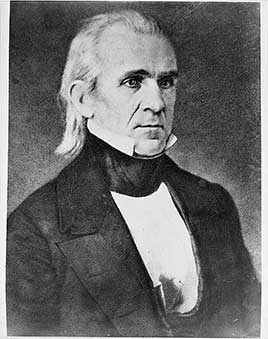

A dark-horse candidate who set four goals and met them all: he cut tariffs, restored the independent Treasury, settled the Oregon border with Britain, and acquired California. The Mexican–American War, which began after he sent troops into disputed land, added about half a million square miles, including California, Nevada, Utah and most of Arizona and New Mexico. The new land reopened the fight over slavery.
Shaded areas show the years in office, with a few years before and after for comparison. Budget years ran July to June until 1976 (now October to September), so each year's figures cover parts of two calendar years.
June 30, 1844 (end of fiscal 1844): $23.46 million → June 30, 1848 (end of fiscal 1848): $47.04 million
Daily debt figures don't exist before 1993, so Polk's numbers use the fiscal years closest to his term, the same rule as every other page. Most of the rise paid for the Mexican–American War.
Debt as a share of GDP. Above 100% means the debt is bigger than a year of everything the country produces.
Money borrowed each budget year (below the line) or paid down (above). The White House budget office's yearly figures begin in 1901.
No national estimates before 1890. Economist Stanley Lebergott's yearly estimates, the earliest national series, begin in 1890
How much prices rose each year (consumer price index).
What everyday prices and paychecks did while in office.
Prices use the consumer price index (MeasuringWorth). The minimum wage is the federal rate set by Congress.
18 orders. Count from the American Presidency Project.
Yearly counts aren't reliable for this era. Orders were not numbered until 1907, when the State Department numbered the ones already in its files, and many orders were never numbered at all, so only the total is shown.
Source: American Presidency Project: executive orders (full list of every order).
Most orders in this era were routine, such as setting aside public land or exempting jobs from civil service rules.
Incomplete: orders before 1929 were not numbered or collected consistently. This archive has 4 of the roughly 18 orders counted for this president.
Source: Executive Orders Archive, compiled from the American Presidency Project and the Federal Register. Topics are the archive's automated tags; "Revoked" and similar labels come from the Federal Register's records.
A pardon wipes out the punishment for a federal crime; a commutation shortens a sentence but leaves the conviction. The Justice Department's published counts begin in 1900.
The Justice Department's published clemency counts begin in fiscal 1900, so there are no reliable yearly totals for this presidency.
Source: U.S. Dept. of Justice, clemency statistics, which lists every recipient with the crime and sentence.
No individual grants from this presidency are highlighted yet.
The same checklist for every president. Tap a row for details and sources.
No articles of impeachment were voted on. In January 1848 the House voted 85–81 to add language saying the war had been 'unnecessarily and unconstitutionally begun by the President'.
SourceNever charged.
No member of his cabinet or White House staff was convicted.
None were appointed.
No official investigation found he used federal law enforcement against opponents.
No one in the administration was charged or formally penalized.
What happened, what was proven, and how it ended.
Polk sent troops into land claimed by both Texas and Mexico; after a clash there he told Congress that Mexico had 'shed American blood upon the American soil'. Critics, including a young congressman named Abraham Lincoln, demanded he name the 'spot' where it happened.
Outcome: Congress declared war; the House later said the war was unconstitutionally begun. Mexico gave up about half its territory in 1848.
SourcePolk owned a cotton plantation in Mississippi worked by enslaved people and, while president, bought more enslaved people, including children, through an agent, keeping the purchases private.
Outcome: Documented from his papers by historians. His will provided for freeing them only after his wife's death; the Civil War freed them first.
SourceWidely quoted remarks, with the context they were said in.
Mexico has passed the boundary of the United States, has invaded our territory and shed American blood upon the American soil.